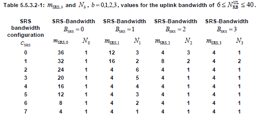
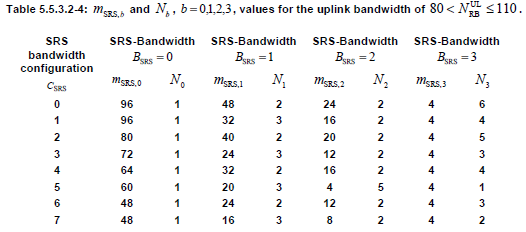

LTE Quick Reference Go Back To Index Home : www.sharetechnote.com
SRS (Sounding Reference Signal)
SRS stands for Sounding Reference Signal. Literally it says a kind of "Reference Signal".
Reference Signal for who ? Is it for UE or for eNodeB ? It is reference signal for eNodeB to figure out the channel quality of uplink path for each subsections of frequence region.
Who is sending this reference signal ? It is UE. (You may remember from Uplink Framestructure section that UE is transmitting SRS at the last symbol of a slot)
Why we need this kind of signal ? As you know, in LTE eNodeB often allocates only a partial section of full system bandwidth for a specific UE and at a specific time. So it would be good to know which section across the overall bandwidth has better channel quality comparing to the other region. In this case, Network can allocate the specific frequency region which is the best for each of the UEs. (If we always have to use full bandwidth, we may not need this kind of reference signal since there is no choice even when there is a better or worse spots within the bandwidth).
How often UE transmit SRS ?
It depends on the configuration set by the signaling message (SIB2, RRC Connection Setup, RRC Connection Reconfiguration etc), but UE can transmit it every two subframes at the most and every 32 frame (320 subframe) at the least (10 bit signaling parameter srs-ConfigIndex tells UE of the periodicity of SRS transmission and the period can be 2,5,10,20,40,80,160,320 ms). Actually there is an option in which UE does not transmit SRS at all.
SRS is transmitted at the last symbol of UL slot with full system band area and it is transmitted by a certain interval. What if multiple UE has the same SRS transmission cycle(interval) ? Would there be any possibility that a bunch of SRS from multiple UEs are overlapped ?
Yes, this is possible. To avoid this kind of situation, we can configure each of UE to transmit SRS in hopping mode with different hopping schedule.
For further details of SRS, please refer to the following link.
http://www.steepestascent.com/content/mediaassets/html/LTE/Help/SRS.html
As I mentioned earlier, SRS configuration is notified to UE by a couple of RRC messages. Common RRC messages carrying SRS configuration info are SIB2, RRC Connection Setup, RRC Connection Reconfiguration.
There are largerly two kinds of SRS, Common SRS and Dedicated SRS. Common SRS is also called Cell Specific SRS and Dedicated SRS is also called UE Specific SRS.
In SIB2, SRS is configured in following information elements. You can disable SRS by setting soundingRS-UL-ConfigCommon if you want.
| +-radioResourceConfigCommon ::= SEQUENCE
| | +-rach-ConfigCommon ::= SEQUENCE
| | +-bcch-Config ::= SEQUENCE
| | +-pcch-Config ::= SEQUENCE
| | +-prach-Config ::= SEQUENCE
| | +-pdsch-ConfigCommon ::= SEQUENCE
| | +-pusch-ConfigCommon ::= SEQUENCE
| | +-pucch-ConfigCommon ::= SEQUENCE
| | +-soundingRS-UL-ConfigCommon ::= CHOICE [setup]
| | | +-setup ::= SEQUENCE [0]
| | | +-srs-BandwidthConfig ::= ENUMERATED [bw2]
| | | +-srs-SubframeConfig ::= ENUMERATED [sc0]
| | | +-ackNackSRS-SimultaneousTransmission ::= BOOLEAN [TRUE]
| | | +-srs-MaxUpPts ::= ENUMERATED OPTIONAL:Omit
| | +-uplinkPowerControlCommon ::= SEQUENCE
| | +-ul-CyclicPrefixLength ::= ENUMERATED [len1]
In RRC Connection Setup and RRC Connection Reconfiguration, SRS is configured in following information elements. You can disable SRS by setting soundingRS-UL-ConfigDedicated if you want.
| +-physicalConfigDedicated ::= SEQUENCE [0000110110] OPTIONAL:Exist
| +-pdsch-ConfigDedicated ::= SEQUENCE OPTIONAL:Omit
| +-pucch-ConfigDedicated ::= SEQUENCE OPTIONAL:Omit
| +-pusch-ConfigDedicated ::= SEQUENCE OPTIONAL:Omit
| +-uplinkPowerControlDedicated ::= SEQUENCE OPTIONAL:Omit
| +-tpc-PDCCH-ConfigPUCCH ::= CHOICE [setup] OPTIONAL:Exist
| +-tpc-PDCCH-ConfigPUSCH ::= CHOICE [setup] OPTIONAL:Exist
| +-cqi-ReportConfig ::= SEQUENCE OPTIONAL:Omit
| +-soundingRS-UL-ConfigDedicated ::= CHOICE [setup] OPTIONAL:Exist
| | +-setup ::= SEQUENCE
| | +-srs-Bandwidth ::= ENUMERATED [bw0]
| | +-srs-HoppingBandwidth ::= ENUMERATED [hbw0]
| | +-freqDomainPosition ::= INTEGER (0..23) [0]
| | +-duration ::= BOOLEAN [FALSE]
| | +-srs-ConfigIndex ::= INTEGER (0..1023) [0]
| | +-transmissionComb ::= INTEGER (0..1) [0]
| | +-cyclicShift ::= ENUMERATED [cs0]
| +-antennaInfo ::= CHOICE [explicitValue] OPTIONAL:Exist
| +-schedulingRequestConfig ::= CHOICE OPTIONAL:Omit
For srs-Bandwidth, refer to following tables from 36.211. Basically these tables defines how many resource block (frequency bandwidth) is allocated for SRS transmission.


For srs-SubframeConfig, please refer to the following table from 36.211. Since srs-SubframeConfig is parameter only for SRS Common (Cell Specific SRS), this table is applied only for Cell Specific SRS. Basically this table defines on which subframe SRS is transmitted and on which subframe it is not transmitted.

How do we know from the table above, which subframe should transmit SRS or which subframe should not ? It is determined by the following rule.
ns here means subframe number.
For example, if we chose subframe configuration 7, T_SFC become 5 and Delta_SFC become {0,1}. According to this, the SRS Status on each subframe become as follows.
|
Subframe Number (ns) |
Floor[ns/2] mod T_SFC |
SRS Status |
|
0 |
Floor[0/2] mod 5 = 0 |
The result is a member of {0,1}, so SRS is ON |
|
1 |
Floor[1/2] mod 5 = 1 |
The result is a member of {0,1}, so SRS is ON |
|
2 |
Floor[2/2] mod 5 = 2 |
The result is not a member of {0,1}, so SRS is OFF |
|
3 |
Floor[3/2] mod 5 = 3 |
The result is not a member of {0,1}, so SRS is OFF |
|
4 |
Floor[4/2] mod 5 = 4 |
The result is not a member of {0,1}, so SRS is OFF |
|
5 |
Floor[5/2] mod 5 = 0 |
The result is a member of {0,1}, so SRS is ON |
|
6 |
Floor[6/2] mod 5 = 1 |
The result is a member of {0,1}, so SRS is ON |
|
7 |
Floor[7/2] mod 5 = 2 |
The result is not a member of {0,1}, so SRS is OFF |
|
8 |
Floor[8/2] mod 5 = 3 |
The result is not a member of {0,1}, so SRS is OFF |
|
9 |
Floor[9/2] mod 5 = 4 |
The result is not a member of {0,1}, so SRS is OFF |
Following is an example frame structure showing the SRS transmission determined by the above table. (In this example, System BW = 5 Mhz, Start RB = 5, Number of RB = 15)

For srs-ConfigIndex, please refer to the following table from 36.213.

For the following parameters, refer to 36.211 5.5.3.2 Mapping to physical resources.
- srs-Bandwidth
- srs-HoppingBandwidth
- freqDomainPosition
One thing to notice that there is no flag for "srs-Hopping ON or OFF", but according to the specification (if I understood it correctly) we can figure "srs-Hopping ON or OFF" indirectly by combining the following two parameters.
srs-HoppingBandwidth >= srs-Bandwidth : SRS Hopping OFF
srs-HoppingBandwidth < srs-Bandwidth : SRS Hopping ON
You can skip following part if you are not realy, realy interested and it would be almost impossible to understand all of details unless you are implementing (programing) this process and test it. To be honest, I haven't tried program this part on my own, so I may not understand the details to the very bottom line. But I reorganized 36.211, 36.213 according to my own thought process and try to understand at least which parameters are involved in the process and how the RRC message parameter get involved in this low layer sequence generation.
SRS is also a kind of Zadoff Chu sequence. So the first step is to create a proper sequence for SRS and this process is pretty simple as follows.

Next step is to allocate the sequence data into each of resource elements which is reserved for carrying SRS. This process is real tricky one and most of SRS parameters are involved in this resource element mapping process. (enjoy !!! -:)
If you read through the 36.211, you would notice that many of these parameters are coming from higher layer. Following is the higher layer message and I associated each of the information elements to the parameters you saw in previous process.
Unfortunately most of parameters related in SRS creation/resource allocation is hard to visualize, but there are at least a couple of parameters that can be visualized as follows.

Once Common SRS and Dedicated SRS are configured, UE has to determine whether it transmit Normal PUSCH or Shortened PUSCH everytime it try to send PUSCH. Following example would help you understand the decision making criteria.
For further details, refer to the following references.
- 36.331, SoundingRS-UL-Config
- 36.211 5.5.3 Sounding reference signal
- 36.213 8.2 UE sounding procedure